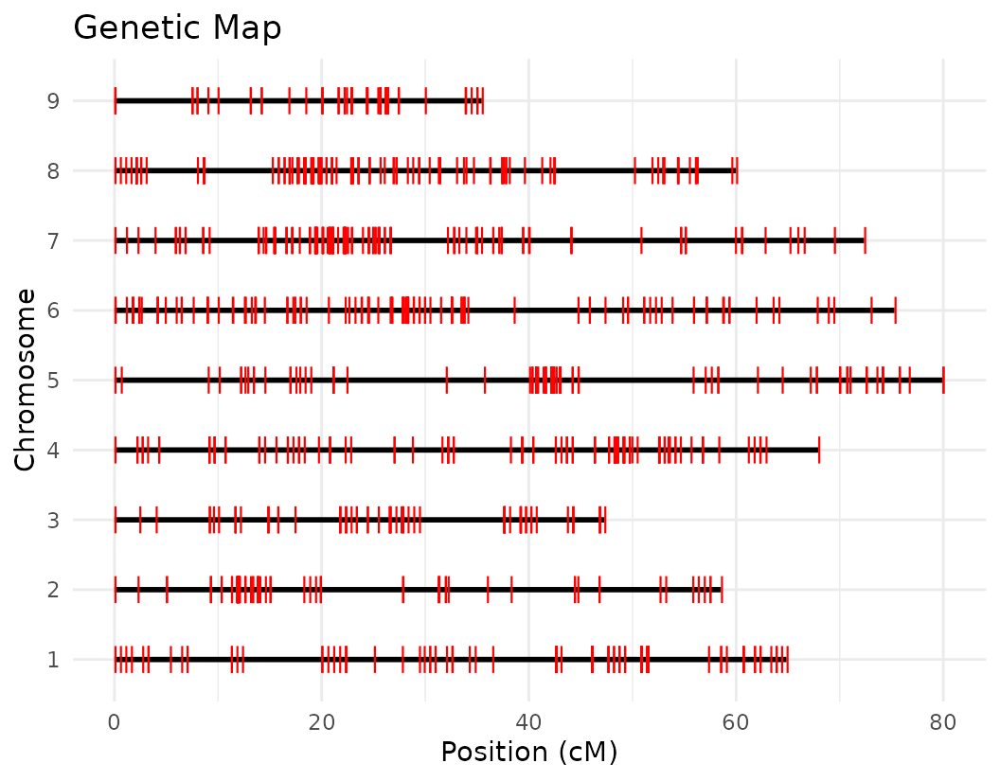
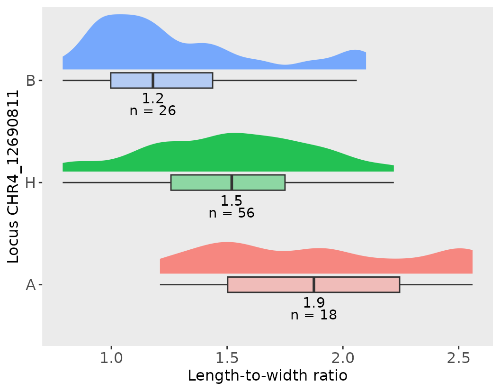
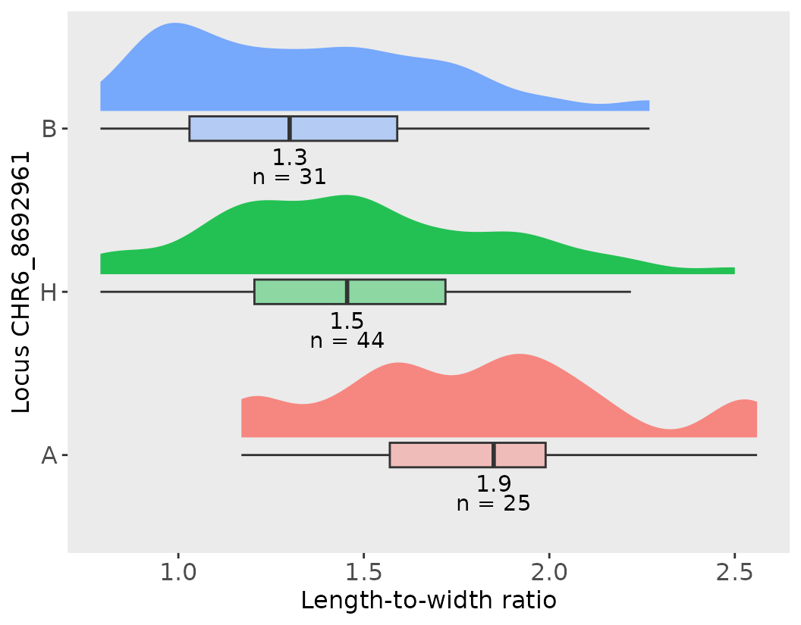

QTL analysis using R/qtl and help from geneticMapR
Source:vignettes/qtl_analysis.Rmd
qtl_analysis.RmdIntro
This vignette demonstrates a complete workflow for QTL analysis using
the R/qtl package and custom functions from
geneticMapR. It includes genome scans, permutation testing,
composite interval mapping, effect plot generation, and estimation of
percent variance explained (PVE).
Load and Prepare Data
M2 <- read.cross("csv", ".", "../data/rqtl.csv",
genotypes = c("A", "H", "B"), alleles = c("A", "B"),
na.strings = "-", estimate.map = FALSE)
#> --Read the following data:
#> 107 individuals
#> 950 markers
#> 8 phenotypes
#> --Cross type: f2
M2 <- jittermap(M2)
summary(M2)
#> F2 intercross
#>
#> No. individuals: 107
#>
#> No. phenotypes: 8
#> Percent phenotyped: 100 100 100 100 100 100 100 100
#>
#> No. chromosomes: 9
#> Autosomes: 1 2 3 4 5 6 7 8 9
#>
#> Total markers: 950
#> No. markers: 100 79 70 106 99 129 163 144 60
#> Percent genotyped: 93.5
#> Genotypes (%): AA:24.8 AB:54.7 BB:20.5 not BB:0.0 not AA:0.0
names(M2$geno)
#> [1] "1" "2" "3" "4" "5" "6" "7" "8" "9"
response_vars <- names(M2$pheno)[-8] # Remove ID columCalculate Genotype Probabilities and Visualize Map
Below, we used a a ggplot2 version of the map coverage
visualization named plotMap from geneticMapR. It works on a
scan.one object, the data format from R/qtl.
M2 <- calc.genoprob(M2, step = 0.25, error.prob = 0.05, map.function = "kosambi")
plotMap_gg(M2, horizontal = TRUE, color = "red")
Genetic Map Statistics
Rqtl estimates statistics of your genetic map which can be calculated as follows:
# Let's look at the genetic map statistics
mapStats2 <- summaryMap(M2)
knitr::kable(head(mapStats2), caption = "Genetic Map Statistics")| n.mar | length | ave.spacing | max.spacing |
|---|---|---|---|
| 100 | 64.87010 | 0.6552535 | 7.660001 |
| 79 | 58.54008 | 0.7505138 | 7.940001 |
| 70 | 47.28007 | 0.6852184 | 8.160001 |
| 106 | 67.93010 | 0.6469534 | 5.520001 |
| 99 | 79.93010 | 0.8156132 | 11.090001 |
| 129 | 75.29013 | 0.5882041 | 6.160001 |
Permutation Tests
Before identifying significant QTLs, we determine a LOD (Logarithm of the Odds) score threshold that accounts for the multiple testing problem across the genome. A common way to do this is through a permutation test.
What is a permutation test?
In QTL mapping, a permutation test is used to empirically estimate the distribution of maximum LOD scores under the null hypothesis of no QTL. This is done by randomly shuffling the phenotype values across individuals and recalculating the genome scan multiple times. By repeating this process, we generate a distribution of LOD scores expected by chance, which allows us to establish trait-specific significance thresholds.
Why do we use it?
Because many positions across the genome are tested for association with the trait, the risk of false positives increases. A permutation test accounts for this genome-wide multiple testing and provides a more reliable, data-driven threshold for identifying significant QTLs.
# number of permutations
n_perm <- 1000
# Initialize an empty list to store the permutation results for each trait
scanone_results2 <- list()
# Loop through each response variable (phenotypic trait)
for (var in response_vars) {
# Run a genome-wide scan using the Haley-Knott regression method with 1000 permutations
# This estimates the LOD threshold for significance for the trait 'var'
perm_result <- scanone(M2, pheno.col = var, method = "hk", n.perm = n_perm)
# Summarize the permutation result (returns LOD threshold statistics)
# and store it in the list using the trait name as the key
scanone_results2[[var]] <- summary(perm_result)
}
#> Doing permutation in batch mode ...
#> Doing permutation in batch mode ...
#> Doing permutation in batch mode ...
#> Doing permutation in batch mode ...
#> Doing permutation in batch mode ...
#> Doing permutation in batch mode ...
#> Doing permutation in batch mode ...
# Assign trait names to the elements of the result list
# This ensures that each element can be identified by the corresponding trait name
names(scanone_results2) <- response_varsGenomewide QTL scan
Below we can start the genome scan. Note that this code is set up to work with multiple traits. That’s why it uses loops.
Once the LOD significance thresholds are estimated using permutation tests, the next step is to perform genome-wide QTL scans for each trait to detect regions associated with phenotypic variation.
What are we doing here?
In the code chunk below, we loop through each trait (stored in response_vars) and apply the scanone() function to perform a genome-wide scan for QTLs using Haley-Knott regression (method = “hk”), a standard method for interval mapping in R/qtl.
Why this matters?
The QTL scan calculates LOD scores across the genome. These scores quantify the evidence for a QTL at each genomic position. Higher LOD values suggest a stronger association between the genotype at that locus and the trait being measured.
# Initialize an empty list to store genome scan results for each trait
scanone_qtl_results2 <- list()
# Loop through each response variable (i.e., phenotype or trait of interest)
for (var in response_vars) {
# Perform a genome-wide QTL scan using Haley-Knott regression
# This computes LOD scores across the genome for the given trait
qtl <- scanone(M2, pheno.col = var, method = "hk")
# Store the result (a data.frame of LOD scores by chromosome and position) in the list
scanone_qtl_results2[[var]] <- qtl
}We have made our first genome scan! we can plot the results of the QTL scan for each trait. This is a good first approximation and we can look at the results to continue to refine our analysis.
Below we visualize the LOD score profiles to identify regions where
QTLs may be located. Please note that these figures are not publication
ready and geneticMapR has functions to help you create a
better QTL trace plot see further articles on how to do this.
# Loop over the list of QTL scan results for each trait
for (i in seq_along(scanone_qtl_results2)) {
# Plot the LOD score trace for the i-th trait
# The plot shows LOD scores across the genome
plot(scanone_qtl_results2[[i]],
main = paste(names(scanone_qtl_results2)[i], "Pop2")) # Add trait name + "Pop2" as the title
# Add a horizontal line representing the 5% significance threshold (LOD cutoff)
# This threshold was previously obtained via permutation test and stored in scanone_results2
abline(h = scanone_results2[[i]][1], lty = "dotted") # Dotted line for visual distinction
}

Composite Interval Mapping (CIM)
To improve QTL detection and reduce the effects of background genetic noise, we now perform Composite Interval Mapping (CIM).
What is CIM?
CIM is an extension of interval mapping that improves precision and power by including background markers (covariates) in the model. These covariates help account for genetic variation from loci outside the interval being tested, reducing false positives and improving detection of closely linked QTLs.
CIM helps to:
Control for the genetic background, reducing confounding effects
Improve resolution to detect QTLs
Differentiate between closely linked QTLs
From the previous QTL trace plots, it looks like there are 4 or 5 peaks for length to width ratio, so we can create a look up table with this information. No other significant signals were identified for the remaining traits.
# Create a lookup table that assigns the number of covariates (marcovars)
# to use for each trait during composite interval mapping
lookup_table2 <- data.frame(
var = response_vars, #Vector of trait names
covar = c(0, 0, 0, 0, 5, 0, 0) #Corresponding number of covariates for each trait
)
# Helper function to retrieve the number of covariates for a given trait
get_n_covar <- function(var, lookup_table2) {
if (var %in% lookup_table2$var) {
# If the trait is listed in the lookup table, return its associated covariate number
return(lookup_table2$covar[lookup_table2$var == var])
} else {
# If the trait is not listed, return an error
stop(paste("No covariate info for", var))
}
}
# Initialize an empty list to store the CIM results for each trait
cim_qtl_results2 <- list()
# Loop over each response variable (trait)
for (var in response_vars) {
# Retrieve the number of covariates to use for this trait
n_marcovar <- get_n_covar(var, lookup_table2)
# Perform composite interval mapping using the Haley-Knott regression method
# pheno.col = var: Use the current trait as the phenotype
# n.marcovar: Number of background markers to use as covariates
# window = 10: Exclude markers within 10 cM of the test interval to avoid collinearity
# map.function = "kosambi": Use Kosambi mapping function for converting recombination to distance
qtl <- cim(M2, pheno.col = var, method = "hk", n.marcovar = n_marcovar,
window = 10, map.function = "kosambi")
# Store the CIM result in the list, by trait name
cim_qtl_results2[[var]] <- qtl
}Permutation test for CIM
As with simple interval mapping, composite interval mapping also requires empirical significance thresholds to determine whether a QTL is statistically significant. This is achieved through permutation testing, which simulates the null distribution of LOD scores.
#Initialize an empty list to store results
cim_perm_pop2 <- list()
# Loop through each trait
for (var in response_vars) {
# get the no. of covariates (background markers) to include for this trait
n_marcovar <- get_n_covar(var, lookup_table2)
# Perform a permutation test using CIM
#n.perm = 100: Number of permutations (typically 100–1000 adjust based on time/resources)
# - method = "hk": Use Haley-Knott regression
# - map.function = "kosambi": Use Kosambi map function for genetic distance
#- n.marcovar = n_marcovar: Number of background markers as covariates
# - window = 10: Exclude markers within 10 cM of the test interval
# - error.prob = 0.05: Default genotyping error probability
perm <- cim(M2, pheno.col = var, method = "hk", n.perm = 100,
map.function = "kosambi", n.marcovar = n_marcovar,
window = 10, error.prob = 0.05)
# Store the summarized permutation results (e.g., LOD thresholds) in the list
cim_perm_pop2[[var]] <- summary(perm)
}
# Assign trait names as keys for easy identification
names(cim_perm_pop2) <- response_varsPlotting CIM
After performing Composite Interval Mapping (CIM) and estimating trait-specific significance thresholds through permutation testing, we visualize the LOD score profiles to identify significant QTLs.
for (i in seq_along(cim_qtl_results2)) {
plot(cim_qtl_results2[[i]], main = paste(names(cim_qtl_results2)[i], "Pop2 CIM"))
abline(h = cim_perm_pop2[[i]][1], lty = "dotted")
}
Please notice that the plot for length-to-width ratio using CIM is different from the plot from our previous regular genome scan. The peaks seem clearer and narrower when CIM was used.
Summary of Significant QTLs
We can save the results of the QTLs scan in a list and query them later.
LOD Support Interval
To estimate the genomic region likely to contain a QTL, we can calculate the LOD support interval. This interval is defined as the region around a QTL peak where the LOD score drops by a specified amount (commonly 1.5 units) from its maximum. This approach helps to define confidence intervals for QTL positions and assists in narrowing down candidate gene regions.
In the example below, we use the get_LOD_int() function
to extract 1.5-LOD drop support intervals for the trait
length_width_ratio using the cim_qtl_results2 object, the genetic map
M2, and the corresponding population results:
lw_result_pop2 <- get_LOD_int(M2, cim_qtl_results2, results_pop2,
trait = "length_width_ratio", drop = 1.5)The output, lw_result_pop2, is a data frame listing the start and end positions of the LOD support intervals for each significant QTL. These intervals provide useful bounds for downstream analyses, such as identifying candidate genes or comparing results across populations.
Effect Plots
We can visualize the allelic effects of a specific QTL using the
effect_plot() function. The effect plot that I propose
below is powerful as it shows the distribution, the median and the
number of individuals under each category. Below, we load the effect
estimates and generate a plot for QTL_1 associated with the
length_width_ratio trait:
effects2 <- read.csv("../data/rqtl.csv")[-c(1:2), ]
# Let's Define the marker of interest for QTL_1
marker1 <- lw_result_pop2$QTL_1$usable_marker
# Let's create an effect plot with a default with flipped coords
effect_plot(effects2, marker1, trait_name = "length_width_ratio",
trait_label = "Length-to-width ratio")
#> [[1]]
#>
#> [[2]]
#> # A tibble: 3 × 6
#> CHR4_12690811 median max min count sd
#> <fct> <dbl> <dbl> <dbl> <int> <dbl>
#> 1 A 1.88 2.56 1.21 18 0.452
#> 2 H 1.52 2.22 0.79 56 0.344
#> 3 B 1.18 2.1 0.79 26 0.374
#>
#> [[3]]
#> pop_sd pop_mean pop_median pop_max
#> 1 0.42 1.52 1.48 2.56This plot shows the mean trait values for each genotype at the marker, helping interpret the direction and magnitude of the QTL effect.
Repeat for other markers as needed as the workflow makes it really easy to obtain effect plots for your QTLs!
Notice that below the plot, the function effec_plot will output phenotypic summary statistics for each of the genotype categories and for the whole population of individuals!
# Let's Define the marker of interest for QTL_1
marker2 <- lw_result_pop2$QTL_2$usable_marker
# Let's create an effect plot with a default with flipped coords
effect_plot(effects2, marker2, trait_name = "length_width_ratio",
trait_label = "Length-to-width ratio")
#> [[1]]
#>
#> [[2]]
#> # A tibble: 3 × 6
#> CHR6_8692961 median max min count sd
#> <fct> <dbl> <dbl> <dbl> <int> <dbl>
#> 1 A 1.85 2.56 1.17 25 0.391
#> 2 H 1.46 2.5 0.79 44 0.390
#> 3 B 1.3 2.27 0.79 31 0.366
#>
#> [[3]]
#> pop_sd pop_mean pop_median pop_max
#> 1 0.42 1.52 1.48 2.56Percent Variance Explained (PVE)
After identifying significant QTLs, we can quantify how much of the phenotypic variation each QTL accounts for. This is typically done by calculating the Percent Variance Explained using a simple linear model.
But what is PVE?
PVE represents the proportion of variation in a trait that can be attributed to a specific marker or QTL. It helps assess the effect size of the QTL and how important it is in controlling the trait.
Interpretation
The R-squared value from the linear model indicates the proportion of variance in length_width_ratio explained by the marker marker1.
To report this as PVE, simply multiply the “Multiple R-squared” value by 100.
# CHR4 example
# Select the marker name of interest, for example,a significant QTL on chromosome 4
colname <- marker1 # This should be a character string like "CHR4_123456"
# Extract the genotype data for this marker from the effects2 dataset
effects2$sig_marker1_pop2 <- effects2[[colname]]
# Fit a linear model with the phenotype as the response and marker genotype as the predictor
fit_CHR4 <- lm(length_width_ratio ~ 1 + sig_marker1_pop2, data = effects2)
# View the model summary, which includes the R-squared value used to calculate PVE
summary(fit_CHR4)
#>
#> Call:
#> lm(formula = length_width_ratio ~ 1 + sig_marker1_pop2, data = effects2)
#>
#> Residuals:
#> Min 1Q Median 3Q Max
#> -0.72339 -0.30308 -0.03225 0.23661 0.81692
#>
#> Coefficients:
#> Estimate Std. Error t value Pr(>|t|)
#> (Intercept) 1.88111 0.08792 21.396 < 2e-16 ***
#> sig_marker1_pop2B -0.59803 0.11437 -5.229 9.81e-07 ***
#> sig_marker1_pop2H -0.36772 0.10107 -3.638 0.000442 ***
#> ---
#> Signif. codes: 0 '***' 0.001 '**' 0.01 '*' 0.05 '.' 0.1 ' ' 1
#>
#> Residual standard error: 0.373 on 97 degrees of freedom
#> (7 observations deleted due to missingness)
#> Multiple R-squared: 0.2201, Adjusted R-squared: 0.204
#> F-statistic: 13.69 on 2 and 97 DF, p-value: 5.802e-06The QTL on chromosome 4 shown in the first effect plot and in the PVE example explains 21.66% of the phenotypic variance if we look at the multiple R-squared.
Save Results
save(cim_qtl_results2,
cim_perm_pop2,
M2,
effects2,
mapStats2,
scanone_qtl_results2,
scanone_results2,
file = "../data/plot_trace_pop2.RData")Conclusion
This vignette provides a streamlined and reproducible QTL mapping
workflow using R/qtl and custom plotting utilities from genticMapR. The
steps shown allow detection, validation, of QTLs in an efficient manner.
Go to the next article to learn more about better visualizing the QTL
results using functions from geneticMapR.